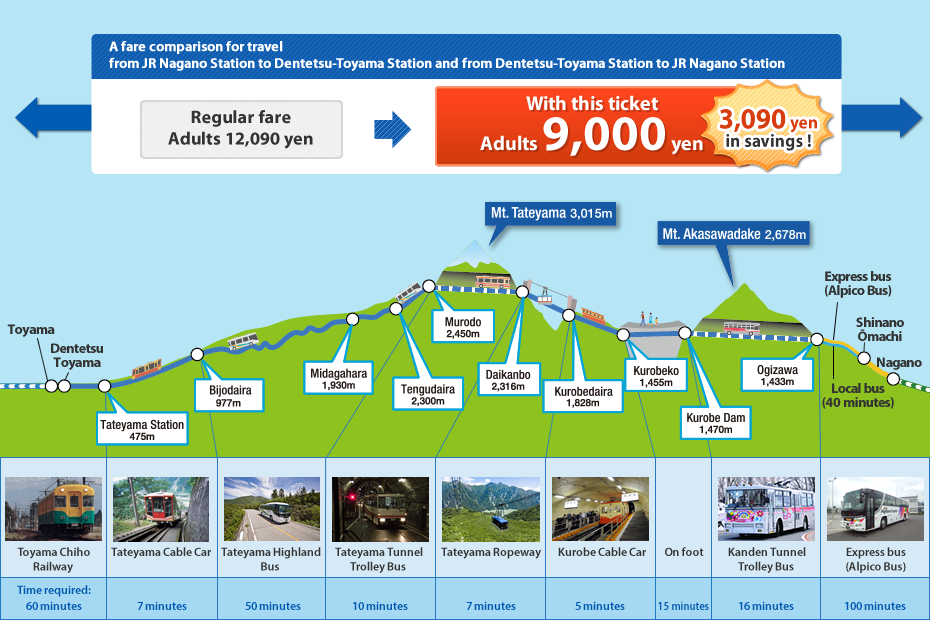
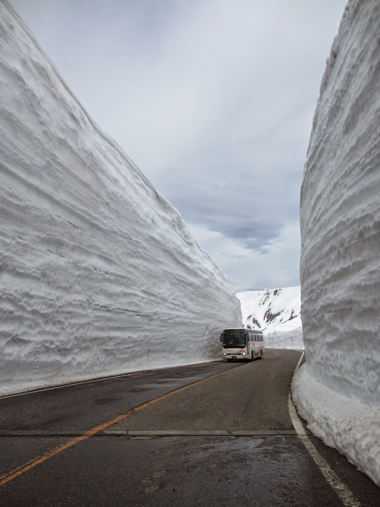

Приехав поздно вечером в г. Тояма мы пошли в отель, который находился в 5 минутах ходьбы от главного вокзала.

Мы специально выбрали такое расположение, т.к. на следующее утро нам предстояло ехать отсюда же к горе Татэяма.

Отель был достаточно хорошего уровня, но с каким-то "престарелым" запахом.

Заселившись в отель мы сдали наш багаж в специальный сервис (Такухайбин 宅配便), который переправил наши вещи на другую сторону маршрута Татэяма Куробэ (к станции Синано Омати), куда мы направлялись. Стоимость отправки 1 500 иен, около $15.

Совет: Не берите много дней в г. Тояма, а просто остановитесь на ночлег, т.к. тут по сути нечего смотреть.

Кстати, Тояма известна своими лекарствами.
Фармацевтика в Тояма имеет долгую традицию. Начатая в 90-е годы XVII века торговля лекарствами вразнос коробейниками из Тояма пользовалась большой популярностью в прошлом по всей Японии. И сейчас эта традиционная система продажи с посещением домов, где оставлялись лекарства с последующим получением платежа только за использованные препараты, широко практикуется в городе и префектуре.
Около станции есть даже памятники.

Погуляли по ночному городу и пошли спать.

Погода была солнечная и ничего не предвещало беды, однако, на следующее утро все было печально. Погода стала пасмурной.

Маршрут можно начать из двух точек на выбор.

Можно поехать из префектуры Нагано в сторону префектуры Тояма и наоборот. Мы выбрали второй вариант.
Мы начали маршрут из префектуры Тояма по направлению к Токио, т.е. наша конечная точка была префектура Нагано.
Мы пошли на вокзал Дэнтэцу Тояма (電鉄富山) и там же сразу оплатили билет от станции Дэнтэцу Тояма до конечной станции Огидзава (扇沢).

Билет стоил 9 490 иен (около 95$).

Ниже я распишу стоимость транспорта детально, но лучше оплатить сразу и не париться.
Внимание! Не перепутайте станции Дэнтэцу Тояма (電鉄富山) и JR Тояма (JR富山) откуда Вы приедете в город Тояма! Это разные станции, но находятся они рядом.

Сначала мы сели на поезд из г. Тояма до подножья горы, к станции Татэяма (1 200 иен).
До г. Татэяма едет маленький двухвагонный состав.

Мы ехали по сельской местности с японскими пенсионерами.

Мы думали, что все обойдется и дождя не будет, т.к. на горизонте уже, казалось бы, становилось ясно, но нет, начался проливной дождь!

Маршрут проходит через северные альпийские горы высотой до 3000 метров, так называемой «крышей Японии», и соединяет Тояма (富山) и Синано Омати (信濃大町).

Дорога до станции Татэяма заняла примерно 1 час.

Поезд едет немного "вверх", поэтому прибыв на станцию Татэяма, Вы уже поднимитесь на высоту 475 метров.

Далее, со станции Татэяма (立山) до ст. Бидзёдайра (美女平) мы пересели на Фуникулёр (720 иен), который на протяжении 1,3 км поднимал нас на высоту 977 метров...
 до ст. Бидзёдайра (美女平), Тояма, Японские Альпы Татэяма Куробэ, Татэяма Куробэ, Tateyama Kurobe Alpine Route, 立山黒部, 立山黒部アルペンルート")
... по склону горы под углом в 29 градусов.
 до ст. Бидзёдайра (美女平), Тояма, Японские Альпы Татэяма Куробэ, Татэяма Куробэ, Tateyama Kurobe Alpine Route, 立山黒部, 立山黒部アルペンルート")
Подъем на Фуникулёре занял примерно 7 минут.
 до ст. Бидзёдайра (美女平), Тояма, Японские Альпы Татэяма Куробэ, Татэяма Куробэ, Tateyama Kurobe Alpine Route, 立山黒部, 立山黒部アルペンルート")
 до ст. Бидзёдайра (美女平), Тояма, Японские Альпы Татэяма Куробэ, Татэяма Куробэ, Tateyama Kurobe Alpine Route, 立山黒部, 立山黒部アルペンルート")
Из-за достаточно жестких природных условий и климата, на альпийском маршруте Татэяма Куробэ используются различные виды транспорта...
 до ст. Бидзёдайра (美女平), Тояма, Японские Альпы Татэяма Куробэ, Татэяма Куробэ, Tateyama Kurobe Alpine Route, 立山黒部, 立山黒部アルペンルート")
 до ст. Бидзёдайра (美女平), Тояма, Японские Альпы Татэяма Куробэ, Татэяма Куробэ, Tateyama Kurobe Alpine Route, 立山黒部, 立山黒部アルペンルート")
... откуда можно наблюдать необычайно восхитительные и разнообразные пейзажи.
 до ст. Бидзёдайра (美女平), Тояма, Японские Альпы Татэяма Куробэ, Татэяма Куробэ, Tateyama Kurobe Alpine Route, 立山黒部, 立山黒部アルペンルート")
Кстати, гора Татэяма, так же как и Фудзи и Хаку, почитается как "священная" на протяжении вот уже более 13 веков.
 до ст. Бидзёдайра (美女平), Тояма, Японские Альпы Татэяма Куробэ, Татэяма Куробэ, Tateyama Kurobe Alpine Route, 立山黒部, 立山黒部アルペンルート")
 до ст. Бидзёдайра (美女平), Тояма, Японские Альпы Татэяма Куробэ, Татэяма Куробэ, Tateyama Kurobe Alpine Route, 立山黒部, 立山黒部アルペンルート")
, Японские Альпы Татэяма Куробэ, Татэяма Куробэ, Tateyama Kurobe Alpine Route, 立山黒部, 立山黒部アルペンルート")
Со станции Бидзёдайра (美女平) мы пересели на автобус (1 710 иен), который едет по горным склонам до станции Муродо (室堂) на высоту 2 450 метров.
, Японские Альпы Татэяма Куробэ, Татэяма Куробэ, Tateyama Kurobe Alpine Route, 立山黒部, 立山黒部アルペンルート")
Протяженность горного альпийского маршрута Татэяма Куробэ составляет 90 километров в длину, поэтому нам предстояло достаточно длительное путешествие (начали маршрут рано утром, а закончили только вечером).
, Японские Альпы Татэяма Куробэ, Татэяма Куробэ, Tateyama Kurobe Alpine Route, 立山黒部, 立山黒部アルペンルート")
, Японские Альпы Татэяма Куробэ, Татэяма Куробэ, Tateyama Kurobe Alpine Route, 立山黒部, 立山黒部アルペンルート")
Дорога автобусом заняла примерно 50 минут. Примерное расстояние - 23 км.


Интересный факт. Татэяма Куробэ прозвали японскими альпами.
Это название происходит из «Путеводителя по Японии», изданного английским горным инженером Вильямом Гоуландом, который сравнил японские горы с европейскими Альпами, и было популяризировано Уолтером Вестеном (1861—1940), английским миссионером, работавшим в Японии.


Доехав автобусом до станции Муродо (室堂) мы сразу же пересели на подземный троллейбус (2 160 иен) до станции Дайканбо (大観峰), который проходит внутри горы Татэяма. Высота самой горы Татэяма - 3 015м.
Мы не смогли посмотреть снежный коридор Муродо (высота снежных стен достигает 20 метров), т.к. из-за огромного количества снега туда можно попасть только с 16 апреля по 22 июня, но выложу хотя бы фотку ниже из и-нета. :)

Горное поселение Татэяма Муродо, которое мы как раз проехали, считается старейшим горным поселением в Японии и официально признано национальным достоянием.

Дорога занимает около 10 минут. Расстояние 3,7 км.

Спустились немного вниз, на высоту 2 316 м.
, Японские Альпы Татэяма Куробэ, Татэяма Куробэ, Tateyama Kurobe Alpine Route, 立山黒部, 立山黒部アルペンルート")
Со станции Дайканбо (大観峰) открывается прекраснейший вид на горы!
, Японские Альпы Татэяма Куробэ, Татэяма Куробэ, Tateyama Kurobe Alpine Route, 立山黒部, 立山黒部アルペンルート")
Это одно из лучших зрелищ для меня!
, Японские Альпы Татэяма Куробэ, Татэяма Куробэ, Tateyama Kurobe Alpine Route, 立山黒部, 立山黒部アルペンルート")
Там же, находится небольшой магазин с сувенирами.
, Японские Альпы Татэяма Куробэ, Татэяма Куробэ, Tateyama Kurobe Alpine Route, 立山黒部, 立山黒部アルペンルート")
, Японские Альпы Татэяма Куробэ, Татэяма Куробэ, Tateyama Kurobe Alpine Route, 立山黒部, 立山黒部アルペンルート")
Оттуда до станции Куробэдайра (黒部平) ведет канатная дорога (1 300 иен).
, Японские Альпы Татэяма Куробэ, Татэяма Куробэ, Tateyama Kurobe Alpine Route, 立山黒部, 立山黒部アルペンルート")
, Японские Альпы Татэяма Куробэ, Татэяма Куробэ, Tateyama Kurobe Alpine Route, 立山黒部, 立山黒部アルペンルート")
Вот такая вот передвижная наблюдательная платформа! :)
, Японские Альпы Татэяма Куробэ, Татэяма Куробэ, Tateyama Kurobe Alpine Route, 立山黒部, 立山黒部アルペンルート")
Сели в этот "вагон" и поехали вниз.
, Японские Альпы Татэяма Куробэ, Татэяма Куробэ, Tateyama Kurobe Alpine Route, 立山黒部, 立山黒部アルペンルート")
С 2 316 метров мы спустились на высоту 1 828 м.
, Японские Альпы Татэяма Куробэ, Татэяма Куробэ, Tateyama Kurobe Alpine Route, 立山黒部, 立山黒部アルペンルート")
Очень захватывающее зрелище!
, Японские Альпы Татэяма Куробэ, Татэяма Куробэ, Tateyama Kurobe Alpine Route, 立山黒部, 立山黒部アルペンルート")
Из окон этого "вагончика" можно наблюдать пейзаж, от которого захватывает дух и замирает сердце. Панорамный вид открывается на всё 360 градусов, поэтому часто канатную дорогу называют «поворачивающейся смотровой площадкой».
Жаль только, что был дождь и на камеру особо не удалось запечатлеть все, что видел глазами.
, Японские Альпы Татэяма Куробэ, Татэяма Куробэ, Tateyama Kurobe Alpine Route, 立山黒部, 立山黒部アルペンルート")
Расстояние в 1,7 км мы преодолели за 7 минут.
И вот мы на Куробэдайра (黒部平). Одно из самых красивейших мест на мой взгляд!
, Японские Альпы Татэяма Куробэ, Татэяма Куробэ, Tateyama Kurobe Alpine Route, 立山黒部, 立山黒部アルペンルート")
А оттуда прибыли мы. С этого края можно даже разглядеть все.
, Японские Альпы Татэяма Куробэ, Татэяма Куробэ, Tateyama Kurobe Alpine Route, 立山黒部, 立山黒部アルペンルート")
Тут даже есть специальный бинокль для более детального обзора местности!
, Японские Альпы Татэяма Куробэ, Татэяма Куробэ, Tateyama Kurobe Alpine Route, 立山黒部, 立山黒部アルペンルート")
Отсюда видны поистине сказочные пейзажи!
, Японские Альпы Татэяма Куробэ, Татэяма Куробэ, Tateyama Kurobe Alpine Route, 立山黒部, 立山黒部アルペンルート")
В каждое время года здесь всегда по-своему хорошо!
, Японские Альпы Татэяма Куробэ, Татэяма Куробэ, Tateyama Kurobe Alpine Route, 立山黒部, 立山黒部アルペンルート")
, Японские Альпы Татэяма Куробэ, Татэяма Куробэ, Tateyama Kurobe Alpine Route, 立山黒部, 立山黒部アルペンルート")
, Японские Альпы Татэяма Куробэ, Татэяма Куробэ, Tateyama Kurobe Alpine Route, 立山黒部, 立山黒部アルペンルート")
Есть даже привал! :)
, Японские Альпы Татэяма Куробэ, Татэяма Куробэ, Tateyama Kurobe Alpine Route, 立山黒部, 立山黒部アルペンルート")
Чтобы добраться от Куробэдайра (黒部平) до Куробэко (黒部湖) мы сели на подземный Фуникулёр (860 иен). Это единственный в Японии подземный фуникулёр.
, Японские Альпы Татэяма Куробэ, Татэяма Куробэ, Tateyama Kurobe Alpine Route, 立山黒部, 立山黒部アルペンルート")
По тоннелю спустились на высоту 1 455 м. Спуск по 800 метровому тоннелю занял 5 минут.

Далее, от Куробэко (黒部湖) мы пошли пешком до плотины Куробэ (黒部ダム)., Японские Альпы Татэяма Куробэ, Татэяма Куробэ, Tateyama Kurobe Alpine Route, 立山黒部, 立山黒部アルペンルート")
Туристический сервис начал функционировать в этой опасной, но красивой местности в 1971 году, сразу же после открытия плотины Куробэ, которая стала символом японского экономического роста и технологического прогресса.
, Японские Альпы Татэяма Куробэ, Татэяма Куробэ, Tateyama Kurobe Alpine Route, 立山黒部, 立山黒部アルペンルート")
Строительство плотины Куробэ велось с 1956 по 1963 гг.
К сожалению, во время строительства плотины погибло 171 человек.
, Японские Альпы Татэяма Куробэ, Татэяма Куробэ, Tateyama Kurobe Alpine Route, 立山黒部, 立山黒部アルペンルート")
Виды с дамбы напоминали сцену из ужастика, т.к. все было окутано жутким туманом.
, Японские Альпы Татэяма Куробэ, Татэяма Куробэ, Tateyama Kurobe Alpine Route, 立山黒部, 立山黒部アルペンルート")
Но выглядело все очень красиво!
, Японские Альпы Татэяма Куробэ, Татэяма Куробэ, Tateyama Kurobe Alpine Route, 立山黒部, 立山黒部アルペンルート")
Плотина Куробэ является самой высокой плотиной в Японии, и одной из самых крупных в мире плотин гидроэлектростанций. Ее высота составляет 186 м...
, Японские Альпы Татэяма Куробэ, Татэяма Куробэ, Tateyama Kurobe Alpine Route, 立山黒部, 立山黒部アルペンルート")
... а длинна 492 м.
, Японские Альпы Татэяма Куробэ, Татэяма Куробэ, Tateyama Kurobe Alpine Route, 立山黒部, 立山黒部アルペンルート")
, Японские Альпы Татэяма Куробэ, Татэяма Куробэ, Tateyama Kurobe Alpine Route, 立山黒部, 立山黒部アルペンルート")
, Японские Альпы Татэяма Куробэ, Татэяма Куробэ, Tateyama Kurobe Alpine Route, 立山黒部, 立山黒部アルペンルート")
, Японские Альпы Татэяма Куробэ, Татэяма Куробэ, Tateyama Kurobe Alpine Route, 立山黒部, 立山黒部アルペンルート")
, Японские Альпы Татэяма Куробэ, Татэяма Куробэ, Tateyama Kurobe Alpine Route, 立山黒部, 立山黒部アルペンルート")
, Японские Альпы Татэяма Куробэ, Татэяма Куробэ, Tateyama Kurobe Alpine Route, 立山黒部, 立山黒部アルペンルート")
, Японские Альпы Татэяма Куробэ, Татэяма Куробэ, Tateyama Kurobe Alpine Route, 立山黒部, 立山黒部アルペンルート")
, Японские Альпы Татэяма Куробэ, Татэяма Куробэ, Tateyama Kurobe Alpine Route, 立山黒部, 立山黒部アルペンルート")
Электростанция плотины находится под землей и содержит четыре генератора.
, Японские Альпы Татэяма Куробэ, Татэяма Куробэ, Tateyama Kurobe Alpine Route, 立山黒部, 立山黒部アルペンルート")
Производственная мощность составляет 335 МВт, а средняя годовая выработка электроэнергии составляет 1 миллиард кВт⋅ч.
, Японские Альпы Татэяма Куробэ, Татэяма Куробэ, Tateyama Kurobe Alpine Route, 立山黒部, 立山黒部アルペンルート")
Поскольку Плотина Куробэ - это одна из самых крупных в мире плотин гидроэлектростанций, то это делает ее чуть ли не главной достопримечательностью альпийского маршрута.
, Японские Альпы Татэяма Куробэ, Татэяма Куробэ, Tateyama Kurobe Alpine Route, 立山黒部, 立山黒部アルペンルート")
Спуск воды из плотины происходит в период с июня по октябрь. Это отличное зрелище для туристов!
, Японские Альпы Татэяма Куробэ, Татэяма Куробэ, Tateyama Kurobe Alpine Route, 立山黒部, 立山黒部アルペンルート")
Походив по плотине Куробэ мы отправились на спуск трамваем (большая часть которого - тоннель в горе) до конечной станции Огидзава (扇沢) на высоту 1 433 м.
, Японские Альпы Татэяма Куробэ, Татэяма Куробэ, Tateyama Kurobe Alpine Route, 立山黒部, 立山黒部アルペンルート")
А уже на станции Огидзава (扇沢) стоит куча автобусов, которые с гор Нагано вернут Вас на землю на высоту 713 метров. :)
Кстати, пока ехали на автобусе до станции Синано-Омати (信濃大町) видели несколько раз перебегающих дорогу обезьянок! :)

Дорога автобусом займет 40 минут. Ехать примерно 18 км.


А оттуда началась самая жесть.
Транспорт тут не очень развит, поэтому, чтобы добраться до Токио нам нужно было сделать еще 3 пересадки на Ж/Д и только после этого мы доехали до вокзала Синдзюку в Токио.
От станции Синано-Омати (信濃大町) за 25 минут мы доехали до станции Ариакэ (有明) в Нагано, а уже там пересели на поезд, едущий до станции Мацумото. Это заняло еще полчаса.
От станции Мацумото мы доехали до станции JR Nagano за 50 минут.

От станции JR Нагано мы сели на Синкансэн и доехали до Синдзюку (Токио) за 1 часа 30 минут. В скоростном поезде не было ни души, по крайней мере в нашем вагоне.


Татэяма Куробэ: мнение сайта Venasera.ru
- Цена - 4
- Расположение - 3
- Полученное удовольствие - 5+
Несмотря на то, что я не видел ничего дороже, чем посещение гор Татэяма Куробэ, это стоит того! Все же за цену 4 балла, т.к. в целом за поездку придется отдать более 1 мана (более 100$), а это круто.
Расположение тоже не самое удачное. Сейчас хоть до г. Тояма из Токио ходят скоростные поезда, а до 2015 г. их тут и в помине не было. А вот от станции Синано Омати придется сильно попотеть и сейчас! Нужно будет сделать минимум 3 пересадки и отдать немало денег за проезд. Поэтому тут смело 3.
Но несмотря на такие негативные оценки в начале я все равно оцениваю это место в целом на 5+ и ставлю максимальный бал, т.к. все-таки впечатления от него окупают все дикие неудобства с транспортом и дикую цену!
Всем рекомендую посетить горы Татэяма Куробэ!
Приехав в Токио у нас еще было несколько дней, а точнее целая рабочая неделя, чтобы напоследок побродить по Токио! :)
На этой статье считаю закончить цикл статей о Японии, т.к. мы по большому счету остается только личная информация, да и фотки я многие потерял, поэтому тут оставлю последнее фото из цикла статей Япония [ONLine]!


Всем спасибо, кто дотерпел дочитал мои статьи до конца! Надеюсь, было интересно. ;)